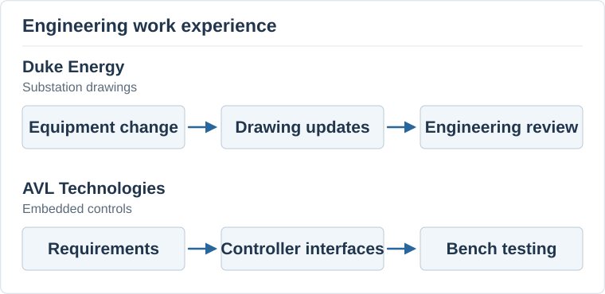
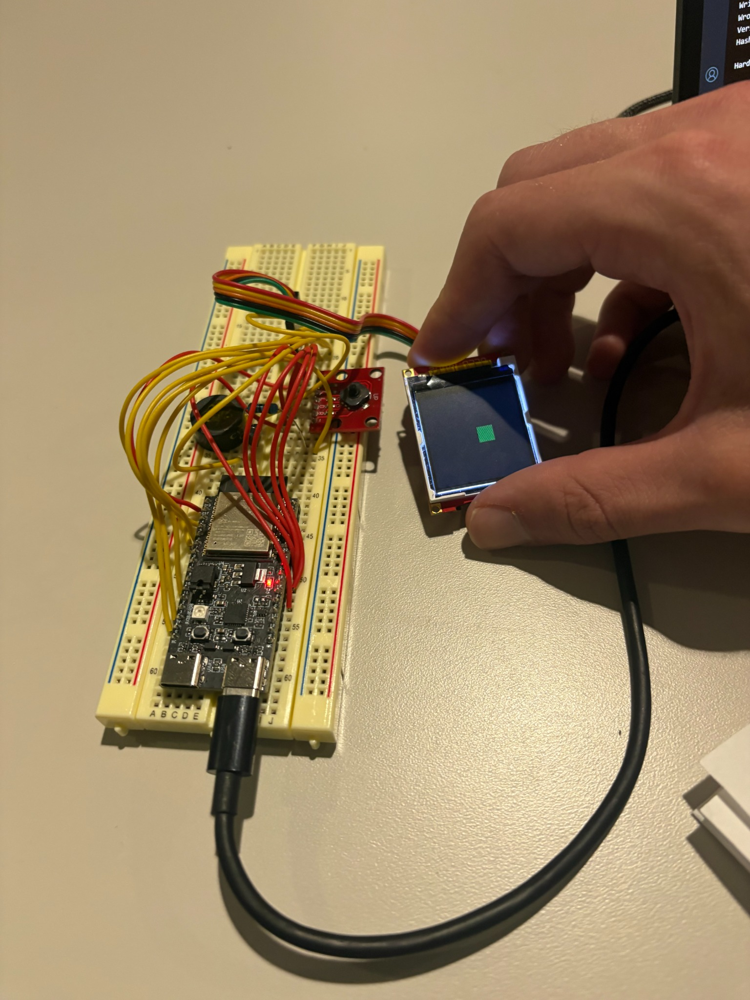
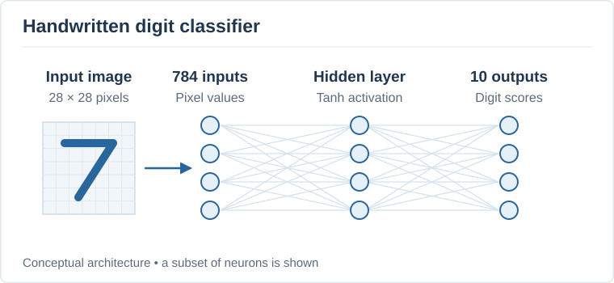

About Me
Hi, I'm Daniel, an electrical engineering student at Georgia Tech graduating in May 2028. I'm interested in consulting and how I can use an engineering background to help companies solve problems. This website includes some of my work, projects, and plans for the next few years.
I transferred to Georgia Tech from NC State in fall 2026. I've enjoyed learning about circuits and programming, but I also like explaining ideas and working with other people. My experiences at Duke Energy and AVL Technologies have helped me figure out what I want from a career.
Outside of school, I'm involved in Swim Club and Silicon Jackets. I also tutor calculus and physics. Tutoring has helped me get better at explaining a problem in different ways when someone doesn't understand it the first time.
Career Goals
I'm interested in technology consulting and technical advisory work. I like the idea of working on different projects, learning about a client's business, and helping them decide what to do. I want a job where I can use technical knowledge while also spending time talking with clients and working on a team.
My next step is to get an internship that gives me more exposure to consulting or the business side of engineering. I plan to practice case interviews, attend recruiting events, and talk to people in these roles. I also want to get more comfortable presenting recommendations and explaining the costs and benefits of different options.
At Georgia Tech, I want to keep building my technical background through classes and projects. I'm considering Circuit Technology and Electronic Devices as my threads. Longer term, I'd like to manage projects and take more responsibility for client relationships. I'm still exploring which area of consulting would fit me best.
Experience
Duke Energy — Spring 2026
As an electrical engineering co-op, I updated MicroStation drawings for a 230 kV breaker replacement. I worked with several types of drawings and incorporated feedback from different engineering teams. This showed me how much coordination goes into a project and why clear documentation matters when several people depend on the same information.
AVL Technologies — Summer 2026
At AVL, I worked with PIC32 microcontrollers used in satellite antenna controls. I traced firmware, tested ADC behavior, and investigated programming and communication issues. Breaking a larger problem into smaller tests was a big part of the work. I think that approach will also be useful when working through unfamiliar client problems.

Projects
Cadence Virtuoso Ring Oscillator
For Silicon Jackets, I designed and tested a current-starved CMOS ring oscillator in Cadence Virtuoso. I completed the physical layout and passed DRC and LVS checks. This project helped me understand how a circuit moves from initial calculations to a checked layout.
Read my ring oscillator project feature
ESP32 Lab
In ECE 2036, I worked with an ESP32-C6, an LCD, and a speaker. I got a moving object to display and tested the audio output. Going back to a working sketch helped me troubleshoot when a later version left the screen blank.

Digit Classifier
I also tested a C++ neural network for recognizing handwritten digits. I compared different hidden-layer sizes and looked at accuracy and runtime. The short training runs gave low accuracy, which showed me why it's important to check results carefully before deciding that a larger model is better.

Resume and Contact
Email me at dcb2048@gmail.com.